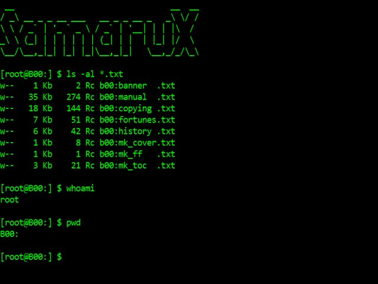

SamaruX
https://github.com/MiguelVis/samarux
SamaruX is a Unix-like shell for the CP/M operating system & the Z80 CPU.
It has been developed with MESCC, my Small-C compiler version for CP/M and Z80.

Overview
This document is not an exhaustive reference of SamaruX, but only an overview, in order to show some of its capabilities. Please, refer to the manual for a complete description.
Instead of write separate commands for each task as in real Unix, the shell has some built-in commands.
Of course, it's not at all a new idea (see BusyBox, for example), but I believe this scheme has a lot of advantages in a small environment like CP/M.
For example, we can save some bytes on disk by joining some commands in one file, instead of writing them as separated ones, because we don't have to repeat some shared code in each of them.
Anyway, the last versions of SamaruX support the development of external commands too (some of them are included as examples).
Obviously, SamaruX doesn't have all functionalities of Unix, but it has some nice and useful commands, to work in a Unix-like system, under our beloved CP/M operating system.
Some SamaruX functionalities are:
- Redirection of stdin and stdout with > and <.
- Piping with |.
- Environment with variables $TERM, $USER, $LINES, $COLUMNS, $TMPDIR, $HOME, $BINDIR, $MANPATH, etc.
- Names for directories.
- Command line history.
- Profiling for environment customization.
- Command aliasing.
- Batch processing with flow control and arguments passing.
- Complete on-line manual.
- Prompt customization.
- Built-in commands: cp, rm, mv, man, cat, more, grep, cd, date, mem, sort, wc, tee, diralias, etc.
- External commands: banner, whoami, robots, cal, head, strings ...
Named directories
With the use of diralias, you can reference a directory (drive and user number) with a name - ie:
diralias system a0:
diralias temp m0:
diralias mescc a3:
cat mescc:sx.c | more
ls system:*.x
cd temp:It's a good idea to include the diralias commands in the SamaruX profile.
Executing SamaruX external commands
Like in previous releases, SamaruX will search the external command files in the directory specified in the environment variable BINDIR:
env BINDIR system:It this variable does not exists, or it's not valid, SamaruX will search the external command files in the current working directory.
If you prefix the filename with a directory, Samarux will search the external command file there:
mescc:cc myprogYou can force SamaruX to search a external command file in the current working directory, if you prefix the filename with the character :, as in:
:ccSearching manuals
SamaruX will seach the manual files in the directory specified in the environment variable MANPATH:
env MANPATH manuals:It this variable does not exists, or it's not valid, SamaruX will search the manual files in the current working directory.
If you prefix the filename with a directory, Samarux will search the manual file there:
man mescc:help stdioYou can force SamaruX to search a manual file in the current working directory, if you prefix the filename with the character :, as in:
man :help stdioCompilation hints
Compile SamaruX with SX_MINIMAL for a minimal number of built-in commands. Then execute make_all_ext2 to build the excluded built-in commands as external.
Execution modes
There are two execution modes:
- CP/M mode: The SamaruX shell will execute only a command and will return to CP/M.
- Interactive mode: The SamaruX shell will read and execute your commands from the keyboard, until you return to CP/M.
CP/M mode example:
A>sx echo Hello world!
Hello world!
A>Interactive mode example:
A>sx
Samarux v1.00 / 29 Dec 2014 - (c) FloppySoftware, Spain
CP/M version 2.2
28 built-in commands
Hi FloppySoftware welcome to Samarux!
[FloppySoftware at B00:] $ env
TERM = vt52
USER = FloppySoftware
PROMPT = [%u at %w] %$
[FloppySoftware at B00:] $ exit
A>Profiling
With profiling, you can customize your SamaruX environment.
Its use it's not compulsory, but highly recommended (and useful).
There are two files for profiling::
profile.sx: For the CP/M mode.profcpm.sx: For the interactive mode.
An example of profiling in interactive mode:
# -------------------------- #
# SAMARUX START-UP PROFILE #
# -------------------------- #
env TERM vt52
env USER FloppySoftware
env PROMPT [%u at %w] %$
#
alias h history 0
alias logout exit
#
echo Hi $USER welcome to Samarux!
echoPiping and redirection
With SamaruX, you can enter useful command lines like:
cat letter.txt | more
grep 'Gary Kildall' cpm.txt article.doc news.txt > refs.txt
ls -l *.h *.c > cfiles.txt
man cat | moreCommand line
You can separate commands in the same line with the semicolon ;:
man cp > cp.txt ; clear ; cat cp.txt | moreYou can include environment variables in your command lines:
env NAME Julius ; echo My name is $NAMEAn argument can contain spaces if it is surrounded by single quotes ':
env NAME 'Julius Smith' ; echo My name is $NAMESamaruX has a command line history facility.
To see the history, just type:
historyAnd the history command will reply something like:
$ history
0: cat manual.doc | more
1: ed letter.txt
2: ls *.c
3: man catTo select a history command entry, just type its number:
history 2And the shell will present a command line, ready to be edited and / or executed:
$ ls *.cExecuting CP/M commands
You can execute CP/M commands by using the cpm command:
cpm PIP A:=M:*.COMYou will return to SamaruX, once the CP/M command had finished its work.
Aliases
You can make aliases for your most frequently used commands:
alias dirall ls -fThen, you can enter the defined alias as a single word:
dirallSmall text editor
SamaruX has the ed command, a very humble text editor, but very useful to create and edit small text files in a fast way.
$ ed profile.sx
File : profile.sx
Lines: 14/48
ed> print
0: # -------------------------- #
1: # SAMARUX START-UP PROFILE #
2: # -------------------------- #
3: # env HOME A00:
4: env TERM vt52
5: # env TEMP M00:
6: env USER FloppySoftware
7: env PROMPT [%u at %w] %$
8: #
9: alias h history 0
10: alias logout exit
11: #
12: echo Hi $USER welcome to Samarux!
13: echo
ed> edit 8
8: # This is a commentHelp!
SamaruX has a built-in command named man, to offer on-line help about commands an other topics.
The help contents is stored in the samarux.man file.
As this file is an ordinary text file with a simple structure, you can even add or modify topics.
To see the available topics, just type:
man | moreTo read about a topic in particular, say cat, just type:
man cat | moreIn addition to this, SamaruX has a built-in command named builtin, that prints the name of all available built-in commands. Just type:
builtinBatch processing and flow control
With the batch command, you can process files with commands as if they were typed on the keyboard.
Some other SamaruX commands will help you with flow control in batch processing:
if
goto
read
exitAn example:
# ----------- #
# TEST SCRIPT #
# ----------- #
#
echo Test Script
echo ===========
# Menu:
echo
echo 1 : Option One
echo 2 : Option Two
echo 0 : Exit
echo
echo -n Your choice:
read OP
echo
if $OP eq 1 goto One
if $OP eq 2 goto Two
if $OP eq 0 goto Exit
echo Bad choice, try again.
goto Menu
# One:
echo Your choice was Option One.
goto Menu
# Two:
echo Your choice was Option Two.
goto Menu
# Exit:
env OPYou can include arguments in batch processing.
If you have a file named write.sx with this contents:
echo $1 $2 $3And you type:
batch write.sx How are you?The system will reply with:
How are you?